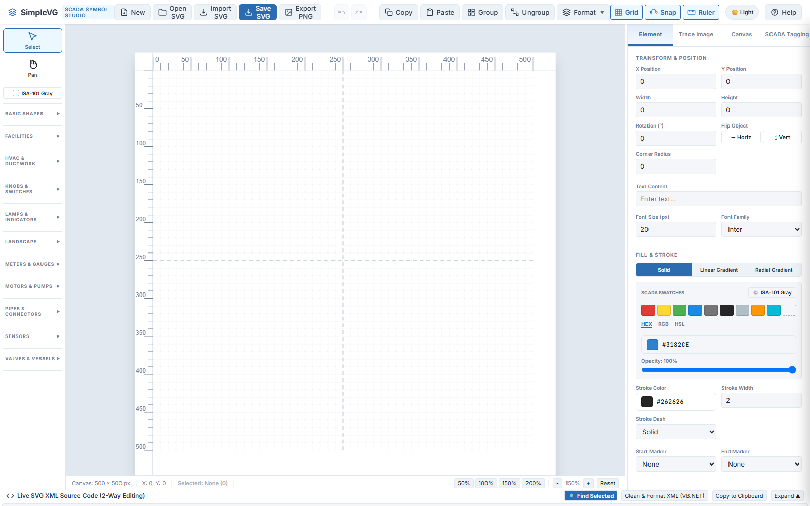
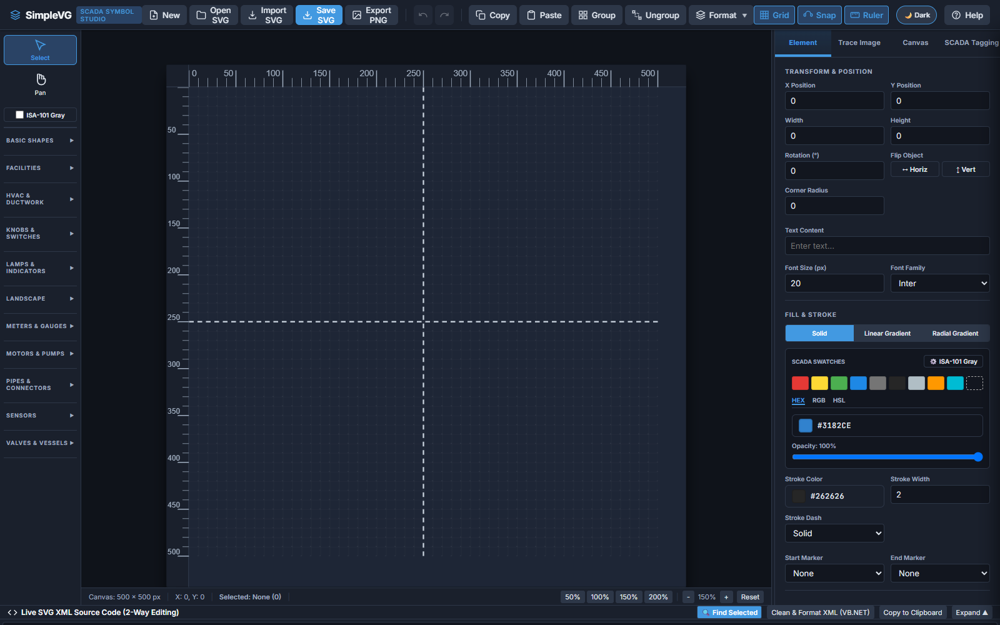
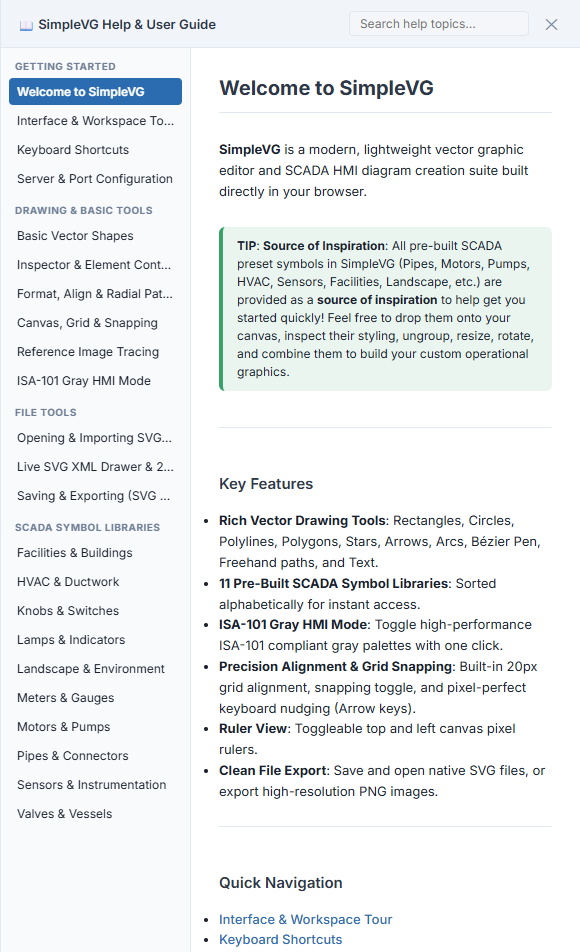

Goal
Know what SimpleVG is, get it running, find your way around the workspace, and choose between the Light and Dark themes.
SimpleVG is a lightweight vector graphics editor that runs in your browser. It is built for drawing SCADA and HMI diagrams, and it reads and writes plain SVG files, so whatever you draw is ready to use elsewhere, including in SentinelSCADA.
Part 1: Start SimpleVG
SimpleVG is a small web server that serves the editor to your browser. Start the SimpleVG application, then open your browser at http://localhost:5123. The editor loads straight away, with a blank canvas ready to draw on.
Note 5123 is the default port. If something else on your computer already uses it, the port can be changed. See Server & Port Configuration in the built-in help.
Part 2: The workspace
The editor is split into four regions.

Menu bar (top)
File actions (New, Open, Save SVG, Export PNG), Undo and Redo, Copy, Paste, Group, Ungroup, the Format menu, and the Grid, Snap and Ruler toggles.
Toolbox (left)
The Select and Pan tools, the ISA-101 Gray checkbox, then collapsible sections: Basic Shapes for drawing, and ten libraries of ready-made SCADA symbols such as pipes, valves, motors and pumps.
Canvas (centre)
The artboard where you draw, with rulers and a grid, and zoom controls along the bottom. The status bar shows the canvas size, the pointer position and how many items are selected.
Inspector (right)
Properties of whatever is selected: position, size, fill, stroke and text, plus tabs for tracing a reference image, canvas settings and SCADA tagging.
Along the bottom is the Live SVG XML Source Code drawer, which we will meet in a later chapter.
Part 3: Light and Dark mode
SimpleVG opens in Light mode. If you prefer a darker workspace, for example in a control room or at night, use the theme button in the menu bar, just left of Help. It shows the theme you are in now: Light or Dark. Click it to switch.

The same workspace in Dark mode.
Your choice is remembered by the browser, so SimpleVG opens in the same theme next time. The theme only changes how the editor looks. It does not change your drawing or the SVG you save.
Part 4: Finding help
Click Help in the menu bar, or press F1, to open the built-in User Guide. It slides in from the right, with topics down the left and a search box at the top.

The help is a reference to every tool, menu and shortcut. Press F1 again, or the close button, to put it away.
Recap
SimpleVG runs in your browser from a small local server, by default at http://localhost:5123.
The workspace is the menu bar, the Toolbox, the Canvas and the Inspector, with the Live SVG drawer along the bottom.
The theme button next to Help switches between Light and Dark, and the browser remembers your choice.